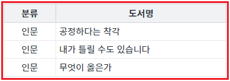
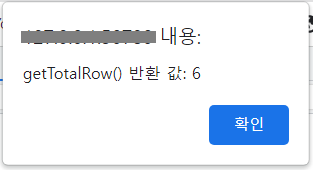
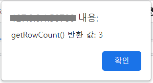
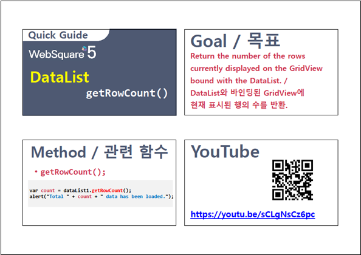

DataList의 로우(행) 수를 반환하는 함수 예시입니다.
제공하는 함수는 두 가지이며 다음과 같습니다.
getTotalRow : 원래의 데이터를 기준으로 반환합니다.
getRowCount : 화면에 보여지는 데이터를 기준으로 반환합니다.(필터에 의해 제외된 데이터와 GridView의 drilldown이 적용되어 접혀진 데이터는 포함되지 않습니다.)
DataList의 전체 로우 수 반환받기
필터가 적용된 DataList의 로우 수 반환받기
STEP 1. 초기 상태를 확인합니다.
다음은 DataList에 할당된 데이터입니다.
DataList에 할당된 JSON 형식의 데이터
[
{ "categoryLabel": "인문", "label": "공정하다는 착각" },
{ "categoryLabel": "소설", "label": "저만치 혼자서" },
{ "categoryLabel": "인문", "label": "내가 틀릴 수도 있습니다" },
{ "categoryLabel": "인문", "label": "무엇이 옳은가" },
{ "categoryLabel": "소설", "label": "불편한 편의점" },
{ "categoryLabel": "소설", "label": "책들의 부엌" }
]화면 로딩 후 DataList 컬럼 'categoryLabel'의 값이 '인문'과 일치하는 데이터만 출력되도록 필터가 적용되었습니다. 필터가 적용된 데이터가 GridView에 구성되어 있습니다.
그림 1.브라우저(Chrome) 실행 예시 - 필터가 적용된 DataList와 연결된 GridView

STEP 2. 버튼 DataList의 전체 로우 수 반환받기을 클릭합니다.
STEP 3. 실행 결과를 확인합니다.
DataList의 전체 로우 수가 alert으로 표시됩니다.
alert 메시지
getTotalRow() 반환 값: 6
그림 2.브라우저(Chrome) 실행 예시

STEP 1. 초기 상태를 확인합니다.
다음은 DataList에 할당된 데이터입니다.
DataList에 할당된 JSON 형식의 데이터
[
{ "categoryLabel": "인문", "label": "공정하다는 착각" },
{ "categoryLabel": "소설", "label": "저만치 혼자서" },
{ "categoryLabel": "인문", "label": "내가 틀릴 수도 있습니다" },
{ "categoryLabel": "인문", "label": "무엇이 옳은가" },
{ "categoryLabel": "소설", "label": "불편한 편의점" },
{ "categoryLabel": "소설", "label": "책들의 부엌" }
]화면 로딩 후 DataList 컬럼 'categoryLabel'의 값이 '인문'과 일치하는 데이터만 출력되도록 필터가 적용되었습니다. 필터가 적용된 데이터가 GridView에 구성되어 있습니다.
그림 3.브라우저(Chrome) 실행 예시 - 필터가 적용된 DataList와 연결된 GridView
STEP 2. 버튼 필터가 적용된 DataList의 로우 수 반환받기을 클릭합니다.
STEP 3. 실행 결과를 확인합니다.
필터가 적용된 DataList의 로우 수가 alert으로 표시됩니다.
alert 메시지
getRowCount() 반환 값: 3
그림 4.브라우저(Chrome) 실행 예시

원하는 시점에 컴포넌트의 함수 'getTotalRow'를 이용하여 스크립트를 작성합니다.
스크립트
// 예제 파일에서는 스크립트 'scwin.btn_exam1_1_onclick'에 작성되어 있습니다. // DataList 'dlt_books'의 전체 로우 수를 반환받습니다. let result = dlt_books.getTotalRow(); // 반환 값 예시) 6
원하는 시점에 컴포넌트의 함수 'getRowCount'를 이용하여 스크립트를 작성합니다.
스크립트
// 예제 파일에서는 스크립트 'scwin.btn_exam2_1_onclick'에 작성되어 있습니다. // DataList 'dlt_books'에 필터가 적용된 로우 수 반환받기 // 화면에 보여지는 데이터를 기준으로 반환합니다.(필터에 의해 제외된 데이터와 GridView의 drilldown이 적용되어 접혀진 데이터는 포함되지 않습니다.) let result = dlt_books.getRowCount(); // 반환 값 예시) 3
getTotalRow( )
getRowCount( )
[웹스퀘어5 SP5 개발 가이드] DataList
링크 : https://docs1.inswave.com/sp5_user_guide/e8b94a03286e4f9f#9954ca390ab74983
DataList - getRowCount()
링크 : https://youtu.be/sCLgNsCz6pc
